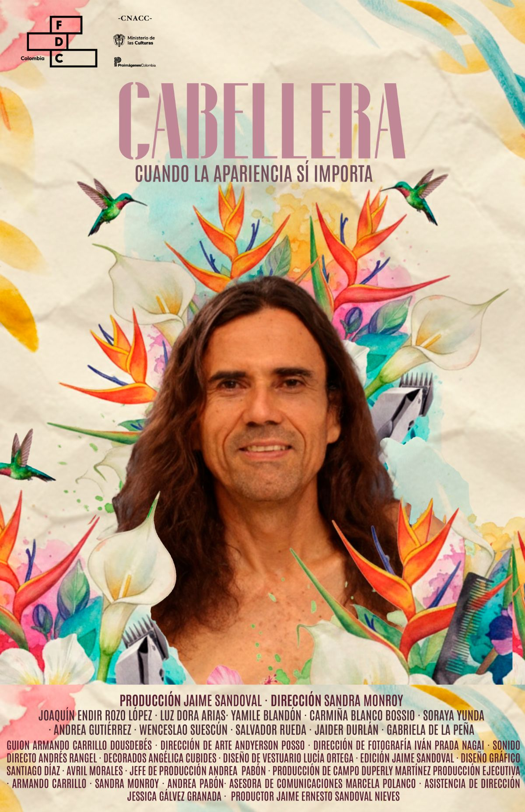
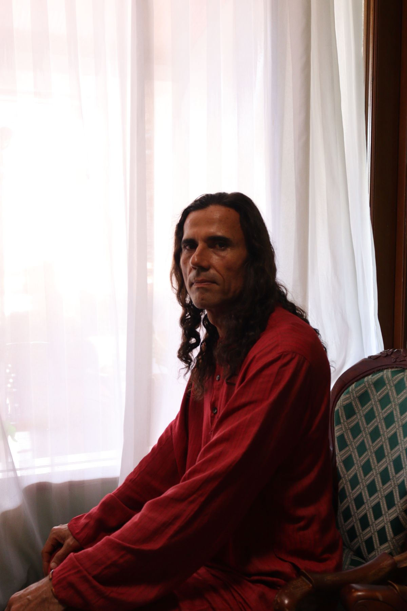
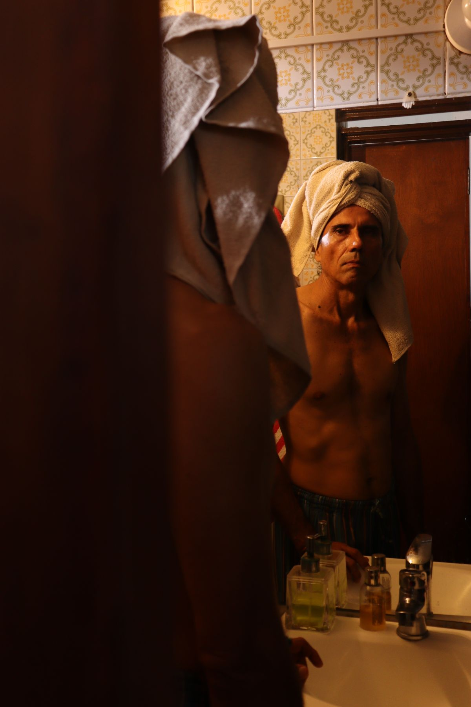
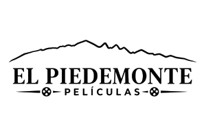

Cabellera
Cuando la apariencia sí importa
Cortometraje de ficción · Colombia · 2025
Sinopsis
Un hombre maduro se deja crecer el cabello para donarlo a enfermos de cáncer, aunque la gente que lo rodea lo juzgue por su apariencia.
Galería


Impacto social, ambiental y sostenibilidad
Sostenibilidad ambiental
Cabellera es una producción comprometida con la sostenibilidad ambiental del territorio. Alrededor de 60 kilos de residuos orgánicos se generaron en el rodaje, y posteriormente se compostaron en una paca digestora Silva.
Impacto social
Acuerdos de equidad e inclusión social con la comunidad LGTBIQ+ y mujeres de la industria local. Un total de 35 empleos directos.
Ficha técnica
- País: Colombia
- Idioma: Español
- Año: 2025
- Productora: El Piedemonte Películas
- Estímulo: Fondo para el Desarrollo Cinematográfico, Relatos regionales 2024
Créditos
- Dirección: Sandra Monroy
- Guion: Armando Carrillo Dousdebés
- Producción: Jaime Ernesto Sandoval Nieves
- Jefe de producción: Andrea del Pilar Pabón Méndez
- Dirección de fotografía: Iván Prada Nagai
- Dirección de arte: Andyerson Posso
- Sonido directo: Andrés Rangel
- Vestuario: Lucía Ortega
- Edición: Jaime Sandoval
- Asistencia de dirección: Jessica Gálvez Granada
- Producción de campo: Duperly Martínez Velásquez
Reparto: Joaquín Endir Rozo López, Luz Dora García, Yamile Blandón, Carmiña Blanco Bossio, Soraya Yunda, Andrea Gutiérrez, Wenceslao Suescún, Salvador Rueda, Jaider Durlán, Gabriela de la Peña
Equipo
Sandra Monroy
Directora
Artista y realizadora audiovisual, guionista, productora, directora y actriz, formada en el programa INI de Mincultura (2005).
Jaime Sandoval
Productor
Realizador de cine y televisión de la Universidad Nacional de Colombia, magíster en escritura de guiones (UNIR, España).
Andrea del Pilar Pabón
Jefe de producción
Comunicadora social y periodista, con experiencia en producción en canales regionales.
Armando Carrillo Dousdebés
Guionista y productor ejecutivo
Duperly Ariel Martínez Velásquez
Productor de campo
Marcela Polanco Machado
Relaciones públicas y difusión
Contacto: elpiedemontefilms@gmail.com
Programadores y prensa
Nota del productor
A través de Cabellera se propone un espacio para conversar sobre los prejuicios, en un momento en que se promueve la inclusión y la resignificación de la diversidad. Además, esta película quiere conectar al espectador con las iniciativas que promueven la donación de cabello como instrumento para mejorar la calidad de vida y la autoestima de las personas que transitan procesos de enfermedad.
Jaime Sandoval, productor
Festivales
Cabellera se proyecta postular y participar en festivales como Crisol, Pele el Ojo, FICDEH y FICCI. Así como en festivales internacionales para posicionar el piedemonte llanero al mundo.
Contacto de prensa: elpiedemontefilms@gmail.com
Aliados y donantes
La causa
Cabellera conecta su historia con la donación de cabello para la elaboración de pelucas destinadas a personas en procesos de enfermedad, como el cáncer.
Aliados
Liga contra el Cáncer, seccional Meta. Biomédica del Llano. Miga, Masa madre y café Villavicencio. FDC, Ministerio de Cultura.

Un cortometraje del piedemonte llanero
Contacto: elpiedemontefilms@gmail.com